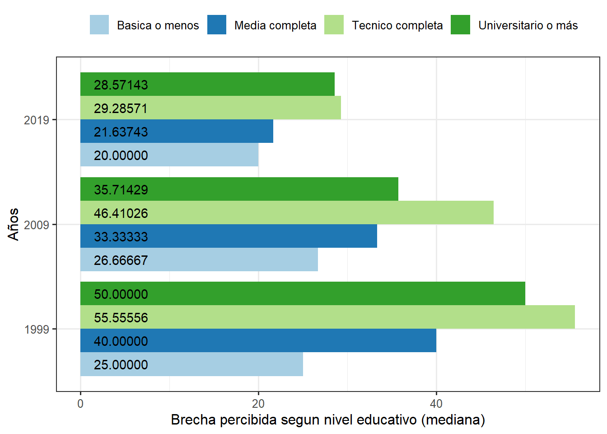

Analysis
1 Libraries & data
2 Adjust data for perceived and just salaries
2.1 1999
2.1.1 Select variables
salarios99 <- cl99 %>% select(v3,
v21,v16, # Salario percibio obrero y gerente
v31,v26)# Salario justo obrero y gerente
dim(salarios99)## [1] 1503 5## v3 v21 v16
## Min. :30 Min. : 10000 Min. : 100000
## 1st Qu.:30 1st Qu.: 90000 1st Qu.: 2000000
## Median :30 Median : 100000 Median : 10000000
## Mean :30 Mean :20293168113 Mean :37995788975
## 3rd Qu.:30 3rd Qu.: 160000 3rd Qu.:99999999998
## Max. :30 Max. :99999999999 Max. :99999999999
## v31 v26
## Min. : 25000 Min. : 80000
## 1st Qu.: 150000 1st Qu.: 2000000
## Median : 200000 Median : 5000000
## Mean :21357897157 Mean :42717023815
## 3rd Qu.: 300000 3rd Qu.:99999999998
## Max. :99999999999 Max. :999999999992.1.2 Identify missings
# table(salarios99$v21) # 99999999999
# table(salarios99$V16) # 99999999998 99999999999
# table(salarios99$V31) # 99999999998 99999999999
# table(salarios99$V26) # 99999999998 99999999999
names(salarios99)## [1] "v3" "v21" "v16" "v31" "v26"salarios99[2:4][salarios99[2:4] >= 99999999998] <- NA
salarios99$v3 <- as_character(salarios99$v3)
summary(salarios99)## v3 v21 v16
## Length:1503 Min. : 10000 Min. : 100000
## Class :character 1st Qu.: 90000 1st Qu.: 1500000
## Mode :character Median : 90000 Median : 3000000
## Mean : 527274 Mean : 8230504
## 3rd Qu.: 100000 3rd Qu.: 6250000
## Max. :120000000 Max. :543000000
## NA's :305 NA's :571
## v31 v26
## Min. : 25000 Min. : 80000
## 1st Qu.: 150000 1st Qu.: 2000000
## Median : 200000 Median : 5000000
## Mean : 777858 Mean :42717023815
## 3rd Qu.: 200000 3rd Qu.:99999999998
## Max. :300000000 Max. :99999999999
## NA's :321## [1] 889 5## v3 v21 v16 v31 v26
## 0 305 571 321 02.1.3 Renames
2.1.4 Outliers
2.1.5 Generate Gaps
#---Brecha salarial percibida
salarios99$gap_perc <- as.numeric(salarios99$salperger/salarios99$salperobr) # diferencia total
salarios99$lngap_perc <- as.numeric(log(salarios99$gap_perc)) # diferencia log
#---Brecha salarial justa
salarios99$gap_just <- as.numeric(salarios99$saljusger/salarios99$saljusobr) # diferencia total
salarios99$lngap_just <- as.numeric(log(salarios99$gap_just)) # diferencia log2.2 2009
2.2.1 Select variables
# table(salarios09$V23) # cuanto gana GERENTE
# table(salarios09$V25) # cuanto gana OBRERO
# table(salarios09$V28) # cuando deberia ganar GERENTE
# table(salarios09$V30) # cuanto deberia ganar OBRERO
salarios09 <- cl09 %>% select(v5,
v23,v25, # Salario percibido obrero y gerente
v28,v30) # Salario justo obrero y gerente
summary(salarios09)## v5 v23 v25 v28
## Min. :152 Min. : -99 Min. : -99 Min. : -99
## 1st Qu.:152 1st Qu.: 2000000 1st Qu.: 150000 1st Qu.: 1000000
## Median :152 Median : 5000000 Median : 160000 Median : 3000000
## Mean :152 Mean : 9991082 Mean : 176822 Mean : 5524310
## 3rd Qu.:152 3rd Qu.: 10000000 3rd Qu.: 200000 3rd Qu.: 5000000
## Max. :152 Max. :400000000 Max. :3000000 Max. :400000000
## v30
## Min. : -99
## 1st Qu.: 250000
## Median : 300000
## Mean : 371163
## 3rd Qu.: 380000
## Max. :250000002.2.2 Renames
2.2.3 Outliers & NAs
salarios09 <- salarios09 %>%
mutate(salperobr=replace(salperobr, salperobr <= 40000 | salperobr>= 1000000, NA)) %>%
mutate(salperger=replace(salperger, salperger <= 250000 | salperger>= 100000001, NA)) %>%
mutate(saljusobr=replace(saljusobr, saljusobr <= 40000, NA)) %>%
mutate(saljusger=replace(saljusger, saljusger <= 100000, NA))
summary(salarios09)## pais salperger salperobr
## Length:1505 Min. : 300000 Min. : 50000
## Class :character 1st Qu.: 3000000 1st Qu.:150000
## Mode :character Median : 5000000 Median :160000
## Mean : 10065000 Mean :181637
## 3rd Qu.: 10000000 3rd Qu.:200000
## Max. :100000000 Max. :800000
## NA's :175 NA's :86
## saljusger saljusobr
## Min. : 120000 Min. : 80000
## 1st Qu.: 2000000 1st Qu.: 250000
## Median : 3000000 Median : 300000
## Mean : 6346388 Mean : 391600
## 3rd Qu.: 6000000 3rd Qu.: 400000
## Max. :400000000 Max. :25000000
## NA's :195 NA's :79## [1] 1262 52.2.4 Gaps
#---Brecha salarial percibida
salarios09$gap_perc <- as.numeric(salarios09$salperger/salarios09$salperobr) # diferencia total
salarios09$lngap_perc <- as.numeric(log(salarios09$gap_perc)) # diferencia log
#---Brecha salarial justa
salarios09$gap_just <- as.numeric(salarios09$saljusger/salarios09$saljusobr) # diferencia total
salarios09$lngap_just <- as.numeric(log(salarios09$gap_just)) # diferencia log2.3 2019
2.3.1 Select variables
salarios19 <- cl19 %>% select(m2_p2_presidente,m2_p2_obrero, # Salario percibio obrero y gerente
m2_p3_presidente,m2_p3_obrero) # Salario justo obrero y gerente
summary(salarios19)## m2_p2_presidente m2_p2_obrero m2_p3_presidente m2_p3_obrero
## Min. : 300000 Min. : 100 Min. : 50000 Min. : 300
## 1st Qu.: 4000000 1st Qu.: 300000 1st Qu.: 2000000 1st Qu.: 400000
## Median : 8000000 Median : 300000 Median : 4000000 Median : 500000
## Mean :11866859 Mean : 364542 Mean : 6366528 Mean : 554185
## 3rd Qu.:15000000 3rd Qu.: 400000 3rd Qu.: 7000000 3rd Qu.: 600000
## Max. :90000000 Max. :8000000 Max. :90000000 Max. :4000000
## NA's :339 NA's :108 NA's :395 NA's :1252.3.2 Renames
2.3.3 Outliers & NAs
2.3.4 Gaps
#---Brecha salarial percibida
salarios19$gap_perc <- as.numeric(salarios19$salperger/salarios19$salperobr) # diferencia total
salarios19$lngap_perc <- as.numeric(log(salarios19$gap_perc)) # diferencia log
#---Brecha salarial justa
salarios19$gap_just <- as.numeric(salarios19$saljusger/salarios19$saljusobr) # diferencia total
salarios19$lngap_just <- as.numeric(log(salarios19$gap_just)) # diferencia log3 Descriptive analysis
3.1 Descriptive perception
3.1.1 Perception worker
table_perob<- rbind(psych::describe(salarios99$salperobr),
psych::describe(salarios09$salperobr),
psych::describe(salarios19$salperobr))
rownames(table_perob) <- c("1999","2009","2019")
table_perob <- table_perob %>% select(n,mean,sd,median,trimmed,min,max)
table_perob## n mean sd median trimmed min max
## 1999 1185 102526.6 45769.36 90000 95947.31 45000 800000
## 2009 1419 181636.7 61462.73 160000 173250.22 50000 800000
## 2019 1247 355602.2 107705.46 300000 343257.26 42000 8000003.1.2 Perception manager
table_perger<- rbind(psych::describe(salarios99$salperger),
psych::describe(salarios09$salperger),
psych::describe(salarios19$salperger))
rownames(table_perger) <- c("1999","2009","2019")
table_perger <- table_perger %>% select(n,mean,sd,median,trimmed,min,max)
table_perger## n mean sd median trimmed min max
## 1999 920 6496250 11719690 3000000 4140897 300000 100000000
## 2009 1330 10065000 14464905 5000000 7074248 300000 100000000
## 2019 1041 11866859 13282919 8000000 9101080 300000 900000003.1.3 Graph perception occupation
# Add occupation & year to tables
table_perob$ocup <- 1 # as.factor(c("Obrero"))
table_perob$year <- c(1999,2009,2019)
table_perger$ocup <- 2 # as.factor(c("Gerente"))
table_perger$year <- c(1999,2009,2019)
table_pertot <-rbind(table_perger,table_perob)
str(table_pertot)## Classes 'psych', 'describe' and 'data.frame': 6 obs. of 9 variables:
## $ n : num 920 1330 1041 1185 1419 ...
## $ mean : num 6496250 10065000 11866859 102527 181637 ...
## $ sd : num 11719690 14464905 13282919 45769 61463 ...
## $ median : num 3000000 5000000 8000000 90000 160000 300000
## $ trimmed: num 4140897 7074248 9101080 95947 173250 ...
## $ min : num 300000 300000 300000 45000 50000 42000
## $ max : num 100000000 100000000 90000000 800000 800000 800000
## $ ocup : num 2 2 2 1 1 1
## $ year : num 1999 2009 2019 1999 2009 ...## n mean sd median trimmed min max ocup
## 1999 920 6496250.0 11719689.89 3000000 4140896.74 300000 100000000 2
## 2009 1330 10065000.0 14464905.07 5000000 7074248.12 300000 100000000 2
## 2019 1041 11866858.8 13282918.71 8000000 9101080.43 300000 90000000 2
## 19991 1185 102526.6 45769.36 90000 95947.31 45000 800000 1
## 20091 1419 181636.7 61462.73 160000 173250.22 50000 800000 1
## 20191 1247 355602.2 107705.46 300000 343257.26 42000 800000 1
## year
## 1999 1999
## 2009 2009
## 2019 2019
## 19991 1999
## 20091 2009
## 20191 2019bar1 <- ggplot(table_pertot, aes(as.factor(year),median)) +
geom_bar(aes(fill = factor(ocup, levels=c(1,2), labels=c("Obrero", "Gerente"))), position = "dodge", stat="identity", width=.5) +
geom_text(aes(label=format(median, big.mark = ",", scientific = FALSE), group="Ocup"), position=position_dodge(width=0.5), vjust=-0.5) +
theme_bw(base_size = 18) +
scale_y_continuous(labels = scales::comma) +
ylab('Salario (mediana)') + xlab('Años') +
scale_fill_brewer(palette="Paired") +
theme(legend.position="top") +
labs(fill = " ") # quitar nombre leyenda, autoexplicativo +
bar1
# Horizontal
table_pertot$ocup2 <- factor(table_pertot$ocup, levels=c(2,1), labels=c("Gerente", "Obrero"))
salario_per <- ggplot(data=table_pertot, aes(x=reorder(as.factor(year),-median), y=median, fill=ocup2)) +
geom_bar(position = 'dodge', stat='identity') +
geom_text(aes(label=format(median, big.mark = ",", scientific = FALSE), y=0), position=position_dodge(0.9), hjust=-0.25) +
theme_bw(base_size = 12) +
scale_y_continuous(labels = scales::comma) +
ylab('Salario percibido (mediana)') + xlab('Años') +
scale_fill_brewer(palette="Paired") +
theme(legend.position="top") +
labs(fill = " ") +
coord_flip()
salario_per
3.2 Descriptive Justice
3.2.1 Worker justice
table_jusob<- rbind(psych::describe(salarios99$saljusobr),
psych::describe(salarios09$saljusobr),
psych::describe(salarios19$saljusobr))
rownames(table_jusob) <- c("1999","2009","2019")
table_jusob <- table_jusob %>% select(n,mean,sd,median,trimmed,min,max)
table_jusob## n mean sd median trimmed min max
## 1999 1181 778495.3 10702403.2 200000 187010.6 50000 300000000
## 2009 1426 391600.3 1097729.2 300000 307329.2 80000 25000000
## 2019 1244 558918.8 267627.8 500000 528308.2 50000 40000003.2.2 Justice manager
table_jusger<- rbind(psych::describe(salarios99$saljusger),
psych::describe(salarios09$saljusger),
psych::describe(salarios19$saljusger))
rownames(table_jusger) <- c("1999","2009","2019")
table_jusger <- table_jusger %>% select(n,mean,sd,median,trimmed,min,max)
table_jusger## n mean sd median trimmed min max
## 1999 1498 42859603691 49501562875 5000000 41086325499 160000 99999999999
## 2009 1310 6346388 15075037 3000000 4130534 120000 400000000
## 2019 979 6405056 9314533 4000000 4600127 200000 900000003.2.3 Graphic Justice
# Add occupation & year to tables
table_jusob$ocup <- 1 # as.factor(c("Obrero"))
table_jusob$year <- c(1999,2009,2019)
table_jusger$ocup <- 2 # as.factor(c("Gerente"))
table_jusger$year <- c(1999,2009,2019)
table_justot <-rbind(table_jusger,table_jusob)
str(table_justot)## Classes 'psych', 'describe' and 'data.frame': 6 obs. of 9 variables:
## $ n : num 1498 1310 979 1181 1426 ...
## $ mean : num 42859603691 6346388 6405056 778495 391600 ...
## $ sd : num 49501562875 15075037 9314533 10702403 1097729 ...
## $ median : num 5000000 3000000 4000000 200000 300000 500000
## $ trimmed: num 41086325499 4130534 4600127 187011 307329 ...
## $ min : num 160000 120000 200000 50000 80000 50000
## $ max : num 99999999999 400000000 90000000 300000000 25000000 ...
## $ ocup : num 2 2 2 1 1 1
## $ year : num 1999 2009 2019 1999 2009 ...## n mean sd median trimmed min
## 1999 1498 42859603690.7 49501562875.3 5000000 41086325499.2 160000
## 2009 1310 6346387.8 15075036.8 3000000 4130534.4 120000
## 2019 979 6405056.1 9314533.3 4000000 4600127.4 200000
## 19991 1181 778495.3 10702403.2 200000 187010.6 50000
## 20091 1426 391600.3 1097729.2 300000 307329.2 80000
## 20191 1244 558918.8 267627.8 500000 528308.2 50000
## max ocup year
## 1999 99999999999 2 1999
## 2009 400000000 2 2009
## 2019 90000000 2 2019
## 19991 300000000 1 1999
## 20091 25000000 1 2009
## 20191 4000000 1 2019bar2 <- ggplot(table_justot, aes(as.factor(year),median)) +
geom_bar(aes(fill = factor(ocup, levels=c(1,2), labels=c("Obrero", "Gerente"))), position = "dodge", stat="identity", width=.5) +
geom_text(aes(label=format(median, big.mark = ",", scientific = FALSE), group="Ocup"), position=position_dodge(width=0.5), vjust=-0.5) +
theme_bw(base_size = 18) +
scale_y_continuous(labels = scales::comma) +
ylab('Salario (mediana)') + xlab('Años') +
scale_fill_brewer(palette="Paired") +
theme(legend.position="top") +
labs(fill = " ") # quitar nombre leyenda, autoexplicativo +
bar2
# Horizontal
table_justot$ocup2 <- factor(table_justot$ocup, levels=c(2,1), labels=c("Gerente", "Obrero"))
salario_justo <- ggplot(data=table_justot, aes(x=reorder(as.factor(year),-year), y=median, fill=ocup2)) +
geom_bar(position = 'dodge', stat='identity') +
geom_text(aes(label=format(median, big.mark = ",", scientific = FALSE), y=0), position=position_dodge(0.9), hjust=-0.25) +
theme_bw(base_size = 12) +
scale_y_continuous(labels = scales::comma) +
ylab('Salario justo (mediana)') + xlab('Años') +
scale_fill_brewer(palette="Paired") +
theme(legend.position="top") +
labs(fill = " ") +
coord_flip()
ggsave(salario_justo,filename = "images/salario_justo.png",device = "png",width = 20,height = 15,dpi = "retina",units = "cm")
salario_justo
3.3 Brechas salariales.
3.3.1 Brecha percivida
table_gap_perc<- rbind(psych::describe(salarios99$gap_perc),
psych::describe(salarios09$gap_perc),
psych::describe(salarios19$gap_perc))
rownames(table_gap_perc) <- c("1999","2009","2019")
table_gap_perc <- table_gap_perc %>% select(n,mean,sd,median,trimmed,min,max)
table_gap_perc## n mean sd median trimmed min max
## 1999 891 69.55 129.95 33.33 42.77 2.50 1250.00
## 2009 1305 60.03 91.50 32.00 40.82 1.33 750.00
## 2019 1017 36.76 44.30 22.50 27.56 0.75 353.333.3.2 Brecha justa
table_gap_just<- rbind(psych::describe(salarios99$gap_just),
psych::describe(salarios09$gap_just),
psych::describe(salarios19$gap_just))
rownames(table_gap_just) <- c("1999","2009","2019")
table_gap_just <- table_gap_just %>% select(n,mean,sd,median,trimmed,min,max)
table_gap_just## n mean sd median trimmed min max
## 1999 1176 162761.41 281537.07 20.0 105908.53 0.02 1428571
## 2009 1291 20.97 46.66 10.0 13.64 0.16 1000
## 2019 962 13.51 21.30 7.5 9.31 0.38 200# Add occupation & year to tables
table_gap_perc$ocup <- 1 # as.factor(c("Obrero"))
table_gap_perc$year <- c(1999,2009,2019)
table_gap_just$ocup <- 2 # as.factor(c("Gerente"))
table_gap_just$year <- c(1999,2009,2019)
table_gap_total <-rbind(table_gap_perc,table_gap_just)
str(table_gap_total)## Classes 'psych', 'describe' and 'data.frame': 6 obs. of 9 variables:
## $ n : num 891 1305 1017 1176 1291 ...
## $ mean : num 69.5 60 36.8 162761.4 21 ...
## $ sd : num 130 91.5 44.3 281537.1 46.7 ...
## $ median : num 33.3 32 22.5 20 10 ...
## $ trimmed: num 42.8 40.8 27.6 105908.5 13.6 ...
## $ min : num 2.5 1.3333 0.75 0.0187 0.16 ...
## $ max : num 1250 750 353 1428571 1000 ...
## $ ocup : num 1 1 1 2 2 2
## $ year : num 1999 2009 2019 1999 2009 ...## n mean sd median trimmed min max ocup year
## 1999 891 69.55 129.95 33.33 42.77 2.50 1250.00 1 1999
## 2009 1305 60.03 91.50 32.00 40.82 1.33 750.00 1 2009
## 2019 1017 36.76 44.30 22.50 27.56 0.75 353.33 1 2019
## 19991 1176 162761.41 281537.07 20.00 105908.53 0.02 1428571.43 2 1999
## 20091 1291 20.97 46.66 10.00 13.64 0.16 1000.00 2 2009
## 20191 962 13.51 21.30 7.50 9.31 0.38 200.00 2 2019bar3 <- ggplot(table_gap_total, aes(as.factor(year),median)) +
geom_bar(aes(fill = factor(ocup, levels=c(1,2), labels=c("justa ", "percibida"))), position = "dodge", stat="identity", width=.5) +
geom_text(aes(label=format(median, big.mark = ",", scientific = FALSE), group="Ocup"), position=position_dodge(width=0.5), vjust=-0.5) +
theme_bw(base_size = 18) +
scale_y_continuous(labels = scales::comma) +
ylab('Brecha (mediana)') + xlab('Años') +
scale_fill_brewer(palette="Paired") +
theme(legend.position="top") +
labs(fill = " ") # quitar nombre leyenda, autoexplicativo +
bar3
# Horizontal
table_gap_total$ocup2 <- factor(table_gap_total$ocup, levels=c(2,1), labels=c("justa", "percibida"))
brechas <- ggplot(data=table_gap_total, aes(x=reorder(as.factor(year),-year), y=median, fill=ocup2)) +
geom_bar(position = 'dodge', stat='identity') +
geom_text(aes(label=format(median, big.mark = ",", scientific = FALSE), y=0), position=position_dodge(0.9), hjust=-0.25) +
theme_bw(base_size = 12) +
scale_y_continuous(labels = scales::comma) +
ylab('Brecha (mediana)') + xlab('Años') +
scale_fill_brewer(palette="Paired") +
theme(legend.position="top") +
labs(fill = " ") +
coord_flip()
ggsave(brechas,filename = "images/Brechas.png",device = "png",width = 20,height = 15,dpi = "retina",units = "cm")
brechas
4 Brechas percibidas y justas segun nivel educativo
load(file = "data/dataproc/cl09.RData")
load(file = "data/dataproc/cl99.RData")
load(file = "data/dataproc/cl19.RData")
load(file = "data/dataproc/issp9919.RData")
library("dplyr")
library("corrplot")
library("ggplot2")ed_gap<- clw3 %>% select("Educacion"=educ_rec, "Brecha_Percibida"=gap_perc, "Brecha_Justa"=gap_just,"year") %>% as.data.frame()ed1_gap99 = ed_gap %>% filter(Educacion == 1) %>% as.data.frame()
ed1_gap99 = ed1_gap99 %>% filter(year == 1999) %>% as.data.frame()
ed1_gap09 = ed_gap %>% filter(Educacion == 1) %>% as.data.frame()
ed1_gap09 = ed1_gap09 %>% filter(year == 2009) %>% as.data.frame()
ed1_gap19 = ed_gap %>% filter(Educacion == 1) %>% as.data.frame()
ed1_gap19 = ed1_gap19 %>% filter(year == 2019) %>% as.data.frame()
table_ed1<- rbind(psych::describe(ed1_gap99$Brecha_Percibida),
psych::describe(ed1_gap09$Brecha_Percibida),
psych::describe(ed1_gap19$Brecha_Percibida))
rownames(table_ed1) <- c("1999","2009","2019")
table_ed1 <- table_ed1 %>% select(n,mean,sd,median,trimmed,min,max)
table_ed1$Educacion<-1
table_ed1$years <- c(1999,2009,2019)
table_ed1## n mean sd median trimmed min max Educacion years
## 1999 420 56.61 129.20 25.00 32.86 2.50 1250.00 1 1999
## 2009 433 47.92 76.11 26.67 33.05 1.33 666.67 1 2009
## 2019 349 33.95 46.00 20.00 24.03 0.75 353.33 1 2019ed2_gap99 = ed_gap %>% filter(Educacion == 2) %>% as.data.frame()
ed2_gap99 = ed2_gap99 %>% filter(year == 1999) %>% as.data.frame()
ed2_gap09 = ed_gap %>% filter(Educacion == 2) %>% as.data.frame()
ed2_gap09 = ed2_gap09 %>% filter(year == 2009) %>% as.data.frame()
ed2_gap19 = ed_gap %>% filter(Educacion == 2) %>% as.data.frame()
ed2_gap19 = ed2_gap19 %>% filter(year == 2019) %>% as.data.frame()
table_ed2<- rbind(psych::describe(ed2_gap99$Brecha_Percibida),
psych::describe(ed2_gap09$Brecha_Percibida),
psych::describe(ed2_gap19$Brecha_Percibida))
rownames(table_ed2) <- c("1999","2009","2019")
table_ed2 <- table_ed2 %>% select(n,mean,sd,median,trimmed,min,max)
table_ed2$Educacion<-2
table_ed2$years <- c(1999,2009,2019)
table_ed2## n mean sd median trimmed min max Educacion years
## 1999 332 77.34 128.53 40.00 49.29 3.33 1111.11 2 1999
## 2009 642 61.88 85.90 33.33 43.95 2.00 714.29 2 2009
## 2019 440 37.05 45.12 21.64 27.25 1.00 346.15 2 2019ed3_gap99 = ed_gap %>% filter(Educacion == 3) %>% as.data.frame()
ed3_gap99 = ed3_gap99 %>% filter(year == 1999) %>% as.data.frame()
ed3_gap09 = ed_gap %>% filter(Educacion == 3) %>% as.data.frame()
ed3_gap09 = ed3_gap09 %>% filter(year == 2009) %>% as.data.frame()
ed3_gap19 = ed_gap %>% filter(Educacion == 3) %>% as.data.frame()
ed3_gap19 = ed3_gap19 %>% filter(year == 2019) %>% as.data.frame()
table_ed3<- rbind(psych::describe(ed3_gap99$Brecha_Percibida),
psych::describe(ed3_gap09$Brecha_Percibida),
psych::describe(ed3_gap19$Brecha_Percibida))
rownames(table_ed3) <- c("1999","2009","2019")
table_ed3 <- table_ed3 %>% select(n,mean,sd,median,trimmed,min,max)
table_ed3$Educacion<-3
table_ed3$years <- c(1999,2009,2019)
table_ed3## n mean sd median trimmed min max Educacion years
## 1999 66 94.79 123.79 55.56 66.86 5.0 666.67 3 1999
## 2009 74 81.28 128.52 46.41 51.70 5.0 666.67 3 2009
## 2019 100 40.63 44.26 29.29 32.73 2.5 320.00 3 2019ed4_gap99 = ed_gap %>% filter(Educacion == 4) %>% as.data.frame()
ed4_gap99 = ed4_gap99 %>% filter(year == 1999) %>% as.data.frame()
ed4_gap09 = ed_gap %>% filter(Educacion == 4) %>% as.data.frame()
ed4_gap09 = ed4_gap09 %>% filter(year == 2009) %>% as.data.frame()
ed4_gap19 = ed_gap %>% filter(Educacion == 4) %>% as.data.frame()
ed4_gap19 = ed4_gap19 %>% filter(year == 2019) %>% as.data.frame()
table_ed4<- rbind(psych::describe(ed4_gap99$Brecha_Percibida),
psych::describe(ed4_gap09$Brecha_Percibida),
psych::describe(ed4_gap19$Brecha_Percibida))
rownames(table_ed4) <- c("1999","2009","2019")
table_ed4 <- table_ed4 %>% select(n,mean,sd,median,trimmed,min,max)
table_ed4$Educacion<-4
table_ed4$years <- c(1999,2009,2019)
table_ed4## n mean sd median trimmed min max Educacion years
## 1999 68 84.26 141.59 50.00 59.40 7.50 1111.11 4 1999
## 2009 153 76.90 123.92 35.71 47.23 2.33 750.00 4 2009
## 2019 122 40.34 36.63 28.57 34.28 2.14 200.00 4 20194.0.1 brecha percibida segun nivel educativo
table_ed_gapper<-rbind(table_ed1,table_ed2,table_ed3,table_ed4)
table_ed_gapper$ocup2 <- factor(table_ed_gapper$Educacion, levels=c(1,2,3,4), labels=c("Basica o menos", "Media completa", "Tecnico completa" , "Universitario o más"))
# Horizontal
table_ed_gapper <- ggplot(data=table_ed_gapper, aes(x=reorder(as.factor(years),-median), y=median, fill=ocup2)) +
geom_bar(position = 'dodge', stat='identity') +
geom_text(aes(label=format(median, big.mark = ",", scientific = FALSE), y=0), position=position_dodge(0.9), hjust=-0.25) +
theme_bw(base_size = 12) +
scale_y_continuous(labels = scales::comma) +
ylab('Brecha percibida segun nivel educativo (mediana)') + xlab('Años') +
scale_fill_brewer(palette="Paired") +
theme(legend.position="top") +
labs(fill = " ") +
coord_flip()
table_ed_gapper
ggsave(table_ed_gapper,filename = "images/gapper_educ.png",device = "png",width = 30,height = 15,dpi = "retina",units = "cm")table_ed1_jus<- rbind(psych::describe(ed1_gap99$Brecha_Justa),
psych::describe(ed1_gap09$Brecha_Justa),
psych::describe(ed1_gap19$Brecha_Justa))
rownames(table_ed1_jus) <- c("1999","2009","2019")
table_ed1_jus <- table_ed1_jus %>% select(n,mean,sd,median,trimmed,min,max)
table_ed1_jus$Educacion<-1
table_ed1_jus$years <- c(1999,2009,2019)
table_ed1_jus## n mean sd median trimmed min max Educacion years
## 1999 403 21.04 100.87 10.00 12.14 0.03 2000 1 1999
## 2009 423 15.35 21.16 10.00 10.83 0.16 200 1 2009
## 2019 330 12.33 20.47 6.67 8.38 0.58 200 1 2019table_ed2_jus<- rbind(psych::describe(ed2_gap99$Brecha_Justa),
psych::describe(ed2_gap09$Brecha_Justa),
psych::describe(ed2_gap19$Brecha_Justa))
rownames(table_ed2_jus) <- c("1999","2009","2019")
table_ed2_jus <- table_ed2_jus %>% select(n,mean,sd,median,trimmed,min,max)
table_ed2_jus$Educacion<-2
table_ed2_jus$years <- c(1999,2009,2019)
table_ed2_jus## n mean sd median trimmed min max Educacion years
## 1999 314 29.71 124.19 10.82 14.91 0.03 2000 2 1999
## 2009 642 23.47 59.97 12.00 14.51 0.40 1000 2 2009
## 2019 419 13.20 20.77 7.00 8.98 0.38 200 2 2019table_ed3_jus<- rbind(psych::describe(ed3_gap99$Brecha_Justa),
psych::describe(ed3_gap09$Brecha_Justa),
psych::describe(ed3_gap19$Brecha_Justa))
rownames(table_ed3_jus) <- c("1999","2009","2019")
table_ed3_jus <- table_ed3_jus %>% select(n,mean,sd,median,trimmed,min,max)
table_ed3_jus$Educacion<-3
table_ed3_jus$years <- c(1999,2009,2019)
table_ed3_jus## n mean sd median trimmed min max Educacion years
## 1999 63 25.51 30.58 16.67 19.26 1.00 166.67 3 1999
## 2009 74 27.01 31.70 16.67 21.17 2.29 200.00 3 2009
## 2019 89 17.21 30.77 8.57 10.57 0.40 200.00 3 2019table_ed4_jus<- rbind(psych::describe(ed4_gap99$Brecha_Justa),
psych::describe(ed4_gap09$Brecha_Justa),
psych::describe(ed4_gap19$Brecha_Justa))
rownames(table_ed4_jus) <- c("1999","2009","2019")
table_ed4_jus <- table_ed4_jus %>% select(n,mean,sd,median,trimmed,min,max)
table_ed4_jus$Educacion<-4
table_ed4_jus$years <- c(1999,2009,2019)
table_ed4_jus## n mean sd median trimmed min max Educacion years
## 1999 62 19.30 18.06 15 16.09 0.02 100.00 4 1999
## 2009 149 23.33 38.53 12 15.94 0.67 333.33 4 2009
## 2019 116 15.39 16.67 10 12.68 1.00 125.00 4 20195 brecha justa segun nivel educativo
table_ed_gapjus<-rbind(table_ed1_jus,table_ed2_jus,table_ed3_jus,table_ed4_jus)
table_ed_gapjus$ocup2 <- factor(table_ed_gapjus$Educacion, levels=c(1,2,3,4), labels=c("Basica o menos", "Media completa", "Tecnico completa" , "Universitario o más"))
# Horizontal
table_ed_gapjus <- ggplot(data=table_ed_gapjus, aes(x=reorder(as.factor(years),-median), y=median, fill=ocup2)) +
geom_bar(position = 'dodge', stat='identity') +
geom_text(aes(label=format(median, big.mark = ",", scientific = FALSE), y=0), position=position_dodge(0.9), hjust=-0.25) +
theme_bw(base_size = 12) +
scale_y_continuous(labels = scales::comma) +
ylab('Brecha justa segun nivel educativo (mediana)') + xlab('Años') +
scale_fill_brewer(palette="Paired") +
theme(legend.position="top") +
labs(fill = " ") +
coord_flip()
table_ed_gapjus
6 Tablas
# Tabla 1
table1<- rbind(psych::describe(salarios99$gap_perc),
psych::describe(salarios09$gap_perc),
psych::describe(salarios19$gap_perc))
rownames(table1) <- c("1999","2009","2019")
table1 <- table1 %>% select(n,mean,sd,median,trimmed,min,max)
kable(table1,row.names = TRUE, digits = 2,caption = "Brecha total de salario percibido por año") %>% kable_styling()| n | mean | sd | median | trimmed | min | max | |
|---|---|---|---|---|---|---|---|
| 1999 | 891 | 69.55 | 129.95 | 33.33 | 42.77 | 2.50 | 1250.00 |
| 2009 | 1305 | 60.03 | 91.50 | 32.00 | 40.82 | 1.33 | 750.00 |
| 2019 | 1017 | 36.76 | 44.30 | 22.50 | 27.56 | 0.75 | 353.33 |
# Tabla 2
table2<- rbind(psych::describe(salarios99$gap_just),
psych::describe(salarios09$gap_just),
psych::describe(salarios19$gap_just))
rownames(table2) <- c("1999","2009","2019")
table2 <- table2 %>% select(n,mean,sd,median,trimmed,min,max)
kable(table2,row.names = TRUE, digits = 2,caption = "Tabla: Brecha total de salario justo por año") %>% kable_styling()| n | mean | sd | median | trimmed | min | max | |
|---|---|---|---|---|---|---|---|
| 1999 | 1176 | 162761.41 | 281537.07 | 20.0 | 105908.53 | 0.02 | 1428571 |
| 2009 | 1291 | 20.97 | 46.66 | 10.0 | 13.64 | 0.16 | 1000 |
| 2019 | 962 | 13.51 | 21.30 | 7.5 | 9.31 | 0.38 | 200 |
# # Tabla 3 ****************************************************************************************
#
# table3<- rbind(psych::describe(sal99$gap_just),
# psych::describe(sal09$gap_just),
# psych::describe(sal19$gap_just))
#
# rownames(table3) <- c("1999","2009","2019")
# table3 <- table3 %>% select(n,mean,sd,median,trimmed,min,max)
#
# kable(table3,row.names = TRUE, digits = 2,caption = "Tabla: Brecha total de salario justo por año") %>% kable_styling() %>%
# footnote(general = "Calculo realizado sin casos extremos superiores e inferiores \n Media recortada sin el 5% de cada extremo")
# # Tabla 4 ****************************************************************************************
#
# table4<- rbind(psych::describe(sal99$gap_perc),
# psych::describe(sal09$gap_perc),
# psych::describe(sal19$gap_perc))
#
# rownames(table4) <- c("1999","2009","2019")
# table4 <- table4 %>% select(n,mean,sd,median,trimmed,min,max)
#
# kable(table4,row.names = TRUE, digits = 2,caption = "Tabla: Brecha total de salario percibido por año") %>% kable_styling() %>%
# footnote(general = "Calculo realizado sin casos extremos superiores e inferiores \n Media recortada sin el 5% de cada extremo")
# ```
## Brecha estimada (log)7 Meritocracia
7.1 1999
7.1.1 Percepción
(1) Esencial - No tiene importancia (5) (8 no sabe, 9 no responde)
v4: Importancia para surgir: provenir familia rica (wfami)
V5: Importancia para surgir: Conocer personas adecuadas (knope)
(1) Muy de acuerdo - Muy en desacuerdo (5) (8 no sabe, 9 no responde)
v6: Recompensas: En Chile las personas son remuneradas por sus esfuerzos (refor)
v7: Recompensas: En Chile las personas son remuneradas por su inteligencia y capacidades (rinte)
v8: Hoy en día, para llegar hasta el nivel más alto en Chile, hay que ser corrupto. (corru)
merit99 <- cl99 %>% select(v4:v8,v49:v55)
merit99$V4 <- car::recode(merit99$v4,"c(8,9)=NA",as.numeric = TRUE)
merit99$v5 <- car::recode(merit99$v5,"c(8,9)=NA",as.numeric = TRUE)
merit99$v6 <- car::recode(merit99$v6,"c(8,9)=NA",as.numeric = TRUE)
merit99$v7 <- car::recode(merit99$v7,"c(8,9)=NA",as.numeric = TRUE)
merit99$v8 <- car::recode(merit99$v8,"c(8,9)=NA",as.numeric = TRUE)
merit99$v4 <- sjmisc::rec(merit99$v4,rec="rev")
merit99$v5 <- sjmisc::rec(merit99$v5,rec="rev")
merit99$v6 <- sjmisc::rec(merit99$v6,rec="rev")
merit99$v7 <- sjmisc::rec(merit99$v7,rec="rev")
merit99$v8 <- sjmisc::rec(merit99$v8,rec="rev")
merit99 <- rename(merit99,
wfami = v4,
knope = v5,
refor = v6,
rinte = v7,
corru = v8)
poly99a <- psych::polychoric(select(merit99,c(wfami,knope,refor,rinte,corru)),na.rm = TRUE)Correlación Policórica para Batería de Percepción de Meritocracia para Chile ISSP 1999
library(GPArotation)
sjPlot::sjt.fa(select(merit99,c(wfami,knope,refor,rinte)),
method = "wls",
nmbr.fctr = 2,
title="Analisis Factorial 1999 Percepcion")| Factor 1 | Factor 2 | |
|---|---|---|
| Importance: coming from a wealthy famil | 0.08 | 0.55 |
| Importance: Knowing the right people | -0.09 | 0.67 |
| People get rewarded for their effort | 0.77 | -0.02 |
| People get rewarded for their skills | 0.84 | 0.01 |
| Cronbach’s α | 0.79 | 0.45 |
m1per99 <- '
gah_nmerit=~wfami+knope+corru
recom=~refor+rinte
'
fit1 <- cfa(model = m1per99,data = merit99)semPlot::semPaths(fit1, "std",
edge.color = "black",
style = "ram",
exoVar = TRUE,
intercepts = F,
thresholds = F,
fade =F)
7.1.2 Preferencia
(1) Esencial - No tiene importancia (5) (8 no sabe, 9 no responde) OO - v49:Importancia para pagar: nivel de responsabilidadad asociado al trabajo (respo)
v50:Importancia para pagar: numero de años dedicados a educación y capacitación (neduc)
v51:Importancia para pagar: si el trabajo requiere que se supervise a otras personas (suprv)
v52:Importancia para pagar: Lo que se necesita para mantener a una familia (mafam)
v53:Importancia para pagar: Que una persona tenga hijos que mantener (hchil)
v54:Importancia para pagar: Lo bien que él/ella realiza su trabajo (gdwrk)
v55:Importancia para pagar: Cuánto se esfuerza él ella en realizar su trabajo (effor)
merit99$v49 <- car::recode(merit99$v49,"c(8,9)=NA",as.numeric = TRUE)
merit99$v50 <- car::recode(merit99$v50,"c(8,9)=NA",as.numeric = TRUE)
merit99$v51 <- car::recode(merit99$v51,"c(8,9)=NA",as.numeric = TRUE)
merit99$v52 <- car::recode(merit99$v52,"c(8,9)=NA",as.numeric = TRUE)
merit99$v53 <- car::recode(merit99$v53,"c(8,9)=NA",as.numeric = TRUE)
merit99$v54 <- car::recode(merit99$v54,"c(8,9)=NA",as.numeric = TRUE)
merit99$v55 <- car::recode(merit99$v55,"c(8,9)=NA",as.numeric = TRUE)
merit99$v49 <-sjmisc::rec(merit99$v49,rec="rev")
merit99$v50 <-sjmisc::rec(merit99$v50,rec="rev")
merit99$v51 <-sjmisc::rec(merit99$v51,rec="rev")
merit99$v52 <-sjmisc::rec(merit99$v52,rec="rev")
merit99$v53 <-sjmisc::rec(merit99$v53,rec="rev")
merit99$v54 <-sjmisc::rec(merit99$v54,rec="rev")
merit99$v55 <-sjmisc::rec(merit99$v55,rec="rev")
merit99 <- rename(merit99,
respo=v49,
neduc=v50,
suprv=v51,
mafam=v52,
hchil=v53,
gdwrk=v54,
effor=v55)
poly99b<- psych::polychoric(select(merit99,c(respo,neduc,suprv,mafam,hchil,gdwrk,effor)),na.rm = TRUE)
Correlación Policórica para Batería de Preferencias en Meritocracia para Chile ISSP 1999
library(GPArotation)
sjPlot::sjt.fa(select(merit99,c(respo,neduc,suprv,mafam,hchil,gdwrk,effor)),
method = "wls",
nmbr.fctr = 3,
title="Analisis Factorial 1999 Preferencia")| Factor 1 | Factor 2 | Factor 3 | |
|---|---|---|---|
| Importance to pay: responsibility | -0.03 | 0.08 | 0.54 |
| Importance to pay: education & training | 0.02 | -0.13 | 0.67 |
| Importance to pay: supervising others | -0.00 | 0.12 | 0.45 |
| Importance to pay: supporting a family | 0.59 | 0.04 | 0.11 |
| Importance to pay: having children | 0.90 | -0.04 | -0.09 |
| Importance to pay: how well they do it | -0.10 | 0.84 | 0.00 |
| Importance to pay: how hard they work | 0.14 | 0.61 | -0.02 |
| Cronbach’s α | 0.70 | 0.68 | 0.57 |
m1pref99 <- '
resp=~respo+neduc+suprv
fami=~mafam+hchil
merit=~gdwrk+effor
'
fit2 <- cfa(model = m1pref99,data = merit99, ordered = c("respo","neduc","suprv","mafam","hchil","gdwrk","effor"))
summary(fit2, fit.measures=TRUE, standardized=TRUE)## lavaan 0.6-4 ended normally after 24 iterations
##
## Optimization method NLMINB
## Number of free parameters 38
##
## Used Total
## Number of observations 1412 1503
##
## Estimator DWLS Robust
## Model Fit Test Statistic 41.286 79.425
## Degrees of freedom 11 11
## P-value (Chi-square) 0.000 0.000
## Scaling correction factor 0.525
## Shift parameter 0.729
## for simple second-order correction (Mplus variant)
##
## Model test baseline model:
##
## Minimum Function Test Statistic 7506.930 4915.746
## Degrees of freedom 21 21
## P-value 0.000 0.000
##
## User model versus baseline model:
##
## Comparative Fit Index (CFI) 0.996 0.986
## Tucker-Lewis Index (TLI) 0.992 0.973
##
## Robust Comparative Fit Index (CFI) NA
## Robust Tucker-Lewis Index (TLI) NA
##
## Root Mean Square Error of Approximation:
##
## RMSEA 0.044 0.066
## 90 Percent Confidence Interval 0.030 0.059 0.053 0.080
## P-value RMSEA <= 0.05 0.725 0.022
##
## Robust RMSEA NA
## 90 Percent Confidence Interval NA NA
##
## Standardized Root Mean Square Residual:
##
## SRMR 0.027 0.027
##
## Parameter Estimates:
##
## Information Expected
## Information saturated (h1) model Unstructured
## Standard Errors Robust.sem
##
## Latent Variables:
## Estimate Std.Err z-value P(>|z|) Std.lv Std.all
## resp =~
## respo 1.000 0.654 0.654
## neduc 0.928 0.047 19.930 0.000 0.607 0.607
## suprv 0.988 0.048 20.717 0.000 0.646 0.646
## fami =~
## mafam 1.000 0.822 0.822
## hchil 0.884 0.039 22.624 0.000 0.727 0.727
## merit =~
## gdwrk 1.000 0.770 0.770
## effor 1.030 0.031 33.618 0.000 0.793 0.793
##
## Covariances:
## Estimate Std.Err z-value P(>|z|) Std.lv Std.all
## resp ~~
## fami 0.286 0.019 14.826 0.000 0.533 0.533
## merit 0.357 0.020 18.137 0.000 0.709 0.709
## fami ~~
## merit 0.406 0.020 20.635 0.000 0.642 0.642
##
## Intercepts:
## Estimate Std.Err z-value P(>|z|) Std.lv Std.all
## .respo 0.000 0.000 0.000
## .neduc 0.000 0.000 0.000
## .suprv 0.000 0.000 0.000
## .mafam 0.000 0.000 0.000
## .hchil 0.000 0.000 0.000
## .gdwrk 0.000 0.000 0.000
## .effor 0.000 0.000 0.000
## resp 0.000 0.000 0.000
## fami 0.000 0.000 0.000
## merit 0.000 0.000 0.000
##
## Thresholds:
## Estimate Std.Err z-value P(>|z|) Std.lv Std.all
## respo|t1 -2.859 0.183 -15.622 0.000 -2.859 -2.859
## respo|t2 -2.155 0.084 -25.574 0.000 -2.155 -2.155
## respo|t3 -1.018 0.040 -25.147 0.000 -1.018 -1.018
## respo|t4 0.635 0.036 17.671 0.000 0.635 0.635
## neduc|t1 -2.693 0.149 -18.086 0.000 -2.693 -2.693
## neduc|t2 -1.807 0.063 -28.646 0.000 -1.807 -1.807
## neduc|t3 -0.902 0.039 -23.255 0.000 -0.902 -0.902
## neduc|t4 0.697 0.036 19.103 0.000 0.697 0.697
## suprv|t1 -2.279 0.095 -24.036 0.000 -2.279 -2.279
## suprv|t2 -1.429 0.049 -29.022 0.000 -1.429 -1.429
## suprv|t3 -0.637 0.036 -17.723 0.000 -0.637 -0.637
## suprv|t4 0.889 0.039 23.016 0.000 0.889 0.889
## mafam|t1 -2.357 0.103 -22.987 0.000 -2.357 -2.357
## mafam|t2 -1.609 0.055 -29.285 0.000 -1.609 -1.609
## mafam|t3 -0.711 0.037 -19.407 0.000 -0.711 -0.711
## mafam|t4 0.672 0.036 18.542 0.000 0.672 0.672
## hchil|t1 -2.029 0.075 -26.930 0.000 -2.029 -2.029
## hchil|t2 -1.368 0.048 -28.736 0.000 -1.368 -1.368
## hchil|t3 -0.575 0.035 -16.225 0.000 -0.575 -0.575
## hchil|t4 0.828 0.038 21.853 0.000 0.828 0.828
## gdwrk|t1 -2.985 0.216 -13.808 0.000 -2.985 -2.985
## gdwrk|t2 -1.989 0.073 -27.308 0.000 -1.989 -1.989
## gdwrk|t3 -0.757 0.037 -20.415 0.000 -0.757 -0.757
## gdwrk|t4 0.795 0.038 21.212 0.000 0.795 0.795
## effor|t1 -2.387 0.106 -22.576 0.000 -2.387 -2.387
## effor|t2 -1.345 0.047 -28.607 0.000 -1.345 -1.345
## effor|t3 -0.448 0.035 -12.935 0.000 -0.448 -0.448
## effor|t4 0.916 0.039 23.492 0.000 0.916 0.916
##
## Variances:
## Estimate Std.Err z-value P(>|z|) Std.lv Std.all
## .respo 0.573 0.573 0.573
## .neduc 0.632 0.632 0.632
## .suprv 0.583 0.583 0.583
## .mafam 0.324 0.324 0.324
## .hchil 0.472 0.472 0.472
## .gdwrk 0.407 0.407 0.407
## .effor 0.371 0.371 0.371
## resp 0.427 0.029 14.684 0.000 1.000 1.000
## fami 0.676 0.031 21.940 0.000 1.000 1.000
## merit 0.593 0.023 25.248 0.000 1.000 1.000
##
## Scales y*:
## Estimate Std.Err z-value P(>|z|) Std.lv Std.all
## respo 1.000 1.000 1.000
## neduc 1.000 1.000 1.000
## suprv 1.000 1.000 1.000
## mafam 1.000 1.000 1.000
## hchil 1.000 1.000 1.000
## gdwrk 1.000 1.000 1.000
## effor 1.000 1.000 1.0007.2 2009
7.2.1 Percepción
(1) Esencial - No tiene importancia (5) (8 no sabe, 9 no responde)
V6 : Importancia para surgir: provenir de familia rica (wfami)
V7 : Importancia para surgir: tener padres con buen nivel de educación (edpar)
V8 : Importancia para surgir: que UD tenga un buen nivel de educación (slfed)
V9 : Importancia para surgir: Tener ambición (ambit)
V10: Importancia para surgir: trabajo duro (hwork)
V11: Importancia para surgir: conocer a las personas adecuadas (knope)
V12: Importancia para surgir: tener contactos políticos (polco)
V13: Importancia para surgir: pagar coimas (corru)
V14: Importancia para surgir: la raza u origen étnico de las personas (etnic)
V15: Importancia para surgir: la religión que tengan las personas (relig)
V16: Importancia para surgir: el sexo de las personas, ser hombre o mujer (gendr)
merit09 <- cl09 %>% select(v6:v16,v47:v52)
merit09$v6 <- car::recode(merit09$v6 ,"c(8,9)=NA",as.numeric = TRUE) # Recodificación missing
merit09$v7 <- car::recode(merit09$v7 ,"c(8,9)=NA",as.numeric = TRUE)
merit09$v8 <- car::recode(merit09$v8 ,"c(8,9)=NA",as.numeric = TRUE)
merit09$v9 <- car::recode(merit09$v9 ,"c(8,9)=NA",as.numeric = TRUE)
merit09$v10 <- car::recode(merit09$v10,"c(8,9)=NA",as.numeric = TRUE)
merit09$v11 <- car::recode(merit09$v11,"c(8,9)=NA",as.numeric = TRUE)
merit09$v12 <- car::recode(merit09$v12,"c(8,9)=NA",as.numeric = TRUE)
merit09$v13 <- car::recode(merit09$v13,"c(8,9)=NA",as.numeric = TRUE)
merit09$v14 <- car::recode(merit09$v14,"c(8,9)=NA",as.numeric = TRUE)
merit09$v15 <- car::recode(merit09$v15,"c(8,9)=NA",as.numeric = TRUE)
merit09$v16 <- car::recode(merit09$v16,"c(8,9)=NA",as.numeric = TRUE)
merit09$v6 <-sjmisc::rec(merit09$v6 ,rec="rev")# invertir sentido escala
merit09$v7 <-sjmisc::rec(merit09$v7 ,rec="rev")# invertir sentido escala
merit09$v8 <-sjmisc::rec(merit09$v8 ,rec="rev")# invertir sentido escala
merit09$v9 <-sjmisc::rec(merit09$v9 ,rec="rev")# invertir sentido escala
merit09$v10 <-sjmisc::rec(merit09$v10,rec="rev")# invertir sentido escala
merit09$v11 <-sjmisc::rec(merit09$v11,rec="rev")# invertir sentido escala
merit09$v12 <-sjmisc::rec(merit09$v12,rec="rev")# invertir sentido escala
merit09$v13 <-sjmisc::rec(merit09$v13,rec="rev")# invertir sentido escala
merit09$v14 <-sjmisc::rec(merit09$v14,rec="rev")# invertir sentido escala
merit09$v15 <-sjmisc::rec(merit09$v15,rec="rev")# invertir sentido escala
merit09$v16 <-sjmisc::rec(merit09$v16,rec="rev")# invertir sentido escala
merit09<- rename(merit09,
wfami=v6 ,
edpar=v7 ,
slfed=v8 ,
ambit=v9 ,
hwork=v10,
knope=v11,
polco=v12,
corru=v13,
etnic=v14,
relig=v15,
gendr=v16)
poly09a <- psych::polychoric(select(merit09,c(wfami,edpar,slfed,ambit,hwork,knope,polco,corru,etnic,relig,gendr)),na.rm = TRUE)
Correlación Policórica para Batería de Percepción en Meritocracia para Chile ISSP 2009
library(GPArotation)
sjPlot::sjt.fa(select(merit09,c(wfami,edpar,slfed,ambit,hwork,polco,corru,etnic,relig,gendr)),
method = "wls",
nmbr.fctr = 4,
title = "Analisis Factorial 2009 Percepcion")| Factor 1 | Factor 2 | Factor 3 | Factor 4 | |
|---|---|---|---|---|
|
Q1a Getting ahead: How important is coming from a wealthy family? |
-0.01 | 0.58 | 0.23 | -0.07 |
|
Q1b Getting ahead: How important is having well-educated parents? |
0.04 | 0.82 | -0.08 | -0.03 |
|
Q1c Getting ahead: How important is having a good education yourself? |
-0.01 | 0.21 | -0.09 | 0.33 |
|
Q1d Getting ahead: How Important is having ambition? |
-0.03 | -0.07 | 0.18 | 0.62 |
|
Q1e Getting ahead: How important is hard work? |
0.02 | -0.11 | -0.05 | 0.57 |
|
Q1g Getting ahead: How important is having political connections? |
-0.07 | 0.06 | 0.73 | -0.00 |
|
Q1h Getting ahead: How important is giving bribes? |
0.32 | -0.04 | 0.44 | 0.08 |
|
Q1i Getting ahead: How important is a person’s race? |
0.66 | 0.08 | 0.11 | -0.04 |
|
Q1j Getting ahead: How important is a person’s religion? |
0.91 | -0.06 | -0.11 | -0.04 |
|
Q1k Getting ahead: How important is being born a man or a woman? |
0.79 | 0.05 | -0.04 | 0.05 |
| Cronbach’s α | 0.82 | 0.67 | 0.60 | 0.49 |
7.2.2 Preferencia
V47:Importancia para pagar: el nivel de responsabilidad que tiene el trabajo (respo)
V48:Importancia para pagar: el numero de años dedicados a la educación y capacitación (neduc)
V49:Importancia para pagar: lo que se necesita para mantener una familia (mafam)
V50:Importancia para pagar: El que la persona tenga hijos que mantener (hchil)
V51:Importancia para pagar: lo bien que él o ella realiza su tabajo (gdwrk)
V52:Importancia para pagar: Lo que él o ella se esfuerza al realizar su trabajo (effor)
merit09$v47 <- car::recode(merit09$v47,"c(8,9)=NA",as.numeric = TRUE) # Recodificación missing
merit09$v48 <- car::recode(merit09$v48,"c(8,9)=NA",as.numeric = TRUE)
merit09$v49 <- car::recode(merit09$v49,"c(8,9)=NA",as.numeric = TRUE)
merit09$v50 <- car::recode(merit09$v50,"c(8,9)=NA",as.numeric = TRUE)
merit09$v51 <- car::recode(merit09$v51,"c(8,9)=NA",as.numeric = TRUE)
merit09$v52 <- car::recode(merit09$v52,"c(8,9)=NA",as.numeric = TRUE)
merit09$v47 <-sjmisc::rec(merit09$v47 ,rec="rev")# invertir sentido escala
merit09$v48 <-sjmisc::rec(merit09$v48 ,rec="rev")# invertir sentido escala
merit09$v49 <-sjmisc::rec(merit09$v49 ,rec="rev")# invertir sentido escala
merit09$v50 <-sjmisc::rec(merit09$v50 ,rec="rev")# invertir sentido escala
merit09$v51 <-sjmisc::rec(merit09$v51 ,rec="rev")# invertir sentido escala
merit09$v52 <-sjmisc::rec(merit09$v52 ,rec="rev")# invertir sentido escala
merit09<- rename(merit09,
respo=v47,
neduc=v48,
mafam=v49,
hchil=v50,
gdwrk=v51,
effor=v52)
poly09b <- psych::polychoric(select(merit09,c(respo,neduc,mafam,hchil,gdwrk,effor)),na.rm = TRUE)
Correlación Policórica para Batería de Preferencias en Meritocracia para Chile ISSP 2009
library(GPArotation)
sjPlot::sjt.fa(select(merit09,c(respo,neduc,mafam,hchil,gdwrk,effor)),
method = "wls",
nmbr.fctr = 2,
title = "Analisis Factorial 2009 Preferencia")| Factor 1 | Factor 2 | |
|---|---|---|
|
Q12a Important for pay: How much responsibility goes with the job? |
0.48 | 0.04 |
|
Q12b Important for pay: the number of years spent in education and training? |
0.35 | 0.10 |
|
Q12c Important for pay: what is needed to support a family? |
-0.10 | 0.99 |
|
Q12d Important for pay: whether the person has children to support? |
0.06 | 0.66 |
|
Q12e Important for pay: how well he or she does the job? |
0.93 | -0.17 |
|
Q12f Important for pay: How hard he or she works at the job? |
0.76 | 0.00 |
| Cronbach’s α | 0.71 | 0.79 |
7.3 2019
7.3.1 Percepción
(1) Esencial - No tiene importancia (5) (8 no sabe, 9 no responde)
M2_P1_1 : Para surgir en la vida: Tener ambición
M2_P1_2 : Para surgir en la vida: Provenir de una familia rica
M2_P1_3 : Para surgir en la vida: Tener padres con buen nivel de educación
M2_P1_4 : Para surgir en la vida: Que UD tenga un buen nivel de educación
M2_P1_5 : Para surgir en la vida: El Trabajo Duro
M2_P1_6 : Para surgir en la vida: Conocer a la personas adecuadas
M2_P1_7 : Para surgir en la vida: Tener contactos políticos
M2_P1_8 : Para surgir en la vida: Pagar coimas
M2_P1_9 : Para surgir en la vida: La raza u origen étnico de la persona
M2_P1_10: Para surgir en la vida: la religión de las personas
M2_P1_11: Para surgir en la vida: el sexo de las personas
merit19 <- cl19 %>% select(m2_p1_1:m2_p1_11,m2_p14_1:m2_p14_4)
merit19$m2_p1_1 <- car::recode(merit19$m2_p1_1 ,"c(8,9)=NA",as.numeric = TRUE) # Recodificación missing
merit19$m2_p1_2 <- car::recode(merit19$m2_p1_2 ,"c(8,9)=NA",as.numeric = TRUE)
merit19$m2_p1_3 <- car::recode(merit19$m2_p1_3 ,"c(8,9)=NA",as.numeric = TRUE)
merit19$m2_p1_4 <- car::recode(merit19$m2_p1_4 ,"c(8,9)=NA",as.numeric = TRUE)
merit19$m2_p1_5 <- car::recode(merit19$m2_p1_5 ,"c(8,9)=NA",as.numeric = TRUE)
merit19$m2_p1_6 <- car::recode(merit19$m2_p1_6 ,"c(8,9)=NA",as.numeric = TRUE)
merit19$m2_p1_7 <- car::recode(merit19$m2_p1_7 ,"c(8,9)=NA",as.numeric = TRUE)
merit19$m2_p1_8 <- car::recode(merit19$m2_p1_8 ,"c(8,9)=NA",as.numeric = TRUE)
merit19$m2_p1_9 <- car::recode(merit19$m2_p1_9 ,"c(8,9)=NA",as.numeric = TRUE)
merit19$m2_p1_10 <- car::recode(merit19$m2_p1_10 ,"c(8,9)=NA",as.numeric = TRUE)
merit19$m2_p1_11 <- car::recode(merit19$m2_p1_11 ,"c(8,9)=NA",as.numeric = TRUE)
merit19$m2_p1_1 <-sjmisc::rec(merit19$m2_p1_1 ,rec="rev")# invertir sentido escala
merit19$m2_p1_2 <-sjmisc::rec(merit19$m2_p1_2 ,rec="rev")# invertir sentido escala
merit19$m2_p1_3 <-sjmisc::rec(merit19$m2_p1_3 ,rec="rev")# invertir sentido escala
merit19$m2_p1_4 <-sjmisc::rec(merit19$m2_p1_4 ,rec="rev")# invertir sentido escala
merit19$m2_p1_5 <-sjmisc::rec(merit19$m2_p1_5 ,rec="rev")# invertir sentido escala
merit19$m2_p1_6 <-sjmisc::rec(merit19$m2_p1_6 ,rec="rev")# invertir sentido escala
merit19$m2_p1_7 <-sjmisc::rec(merit19$m2_p1_7 ,rec="rev")# invertir sentido escala
merit19$m2_p1_8 <-sjmisc::rec(merit19$m2_p1_8 ,rec="rev")# invertir sentido escala
merit19$m2_p1_9 <-sjmisc::rec(merit19$m2_p1_9 ,rec="rev")# invertir sentido escala
merit19$m2_p1_10 <-sjmisc::rec(merit19$m2_p1_10,rec="rev")# invertir sentido escala
merit19$m2_p1_11 <-sjmisc::rec(merit19$m2_p1_11,rec="rev")# invertir sentido escala
merit19<- rename(merit19,
ambit=m2_p1_1 ,
wfami=m2_p1_2 ,
edpar=m2_p1_3 ,
slfed=m2_p1_4 ,
hwork=m2_p1_5 ,
knope=m2_p1_6 ,
polco=m2_p1_7 ,
corru=m2_p1_8 ,
etnic=m2_p1_9 ,
relig=m2_p1_10,
gendr=m2_p1_11 )
poly19a <- psych::polychoric(select(merit19,c(wfami,edpar,slfed,ambit,hwork,knope,polco,corru,etnic,relig,gendr)),na.rm = TRUE)Correlación Policórica para Batería de Percepción en Meritocracia para Chile ISSP 2019
sjPlot::sjt.fa(select(merit19,c(wfami,edpar,slfed,hwork,polco,corru,etnic,relig,gendr)),
method = "wls",
nmbr.fctr = 4,
title = "Analisis Factorial 2019 Percepción")| Factor 1 | Factor 2 | Factor 3 | Factor 4 | |
|---|---|---|---|---|
|
Para surgir en la vida, ¿cuán importante cree Ud. que es "Provenir de una famili |
-0.09 | 0.74 | 0.01 | -0.02 |
|
Para surgir en la vida, ¿cuán importante cree Ud. que es "Tener padres con altos |
-0.06 | 0.56 | 0.02 | 0.16 |
|
Para surgir en la vida, ¿cuán importante cree Ud. que es "Que Ud. tenga un buen |
0.07 | 0.11 | -0.02 | 0.87 |
|
Para surgir en la vida, ¿cuán importante cree Ud. que es “El trabajo duro”? |
0.02 | 0.02 | 0.94 | -0.02 |
|
Para surgir en la vida, ¿cuán importante cree Ud. que es "Tener contactos polÃti |
0.27 | 0.45 | -0.03 | -0.04 |
|
Para surgir en la vida, ¿cuán importante cree Ud. que es “Pagar coimas”? |
0.43 | 0.32 | -0.00 | -0.17 |
|
Para surgir en la vida, ¿cuán importante cree Ud. que es "La raza u origen étnic |
0.82 | -0.00 | -0.01 | -0.00 |
|
Para surgir en la vida, ¿cuán importante cree Ud. que es "La religión de las per |
0.88 | -0.10 | 0.01 | 0.08 |
|
Para surgir en la vida, ¿cuán importante cree Ud. que es "El sexo de las persona |
0.93 | -0.13 | 0.02 | 0.08 |
| Cronbach’s α | 0.85 | 0.61 |
7.3.2 Preferencia
M2_P14_1: Importancia para ganar: El nivel de responsabilidad que tiene su trabajo
M2_P14_2: Importancia para ganar: El número de años dedicados a educación y capacitación
M2_P14_3: Importancia para ganar: El que la persona tenga hijos que mantener
M2_P14_4: Importancia para ganar: Lo bien que él o ella realiza su trabajo
merit19$m2_p14_1 <- car::recode(merit19$m2_p14_1,"c(8,9)=NA",as.numeric = TRUE) # Recodificación missing
merit19$m2_p14_2 <- car::recode(merit19$m2_p14_2,"c(8,9)=NA",as.numeric = TRUE)
merit19$m2_p14_3 <- car::recode(merit19$m2_p14_3,"c(8,9)=NA",as.numeric = TRUE)
merit19$m2_p14_4 <- car::recode(merit19$m2_p14_4,"c(8,9)=NA",as.numeric = TRUE)
merit19$m2_p14_1 <-sjmisc::rec(merit19$m2_p14_1 ,rec="rev")# invertir sentido escala
merit19$m2_p14_2 <-sjmisc::rec(merit19$m2_p14_2 ,rec="rev")# invertir sentido escala
merit19$m2_p14_3 <-sjmisc::rec(merit19$m2_p14_3 ,rec="rev")# invertir sentido escala
merit19$m2_p14_4 <-sjmisc::rec(merit19$m2_p14_4 ,rec="rev")# invertir sentido escala
merit19<- rename(merit19,
respo=m2_p14_1,
neduc=m2_p14_2,
hchil=m2_p14_3,
gdwrk=m2_p14_4)
poly19b <- psych::polychoric(select(merit19,c(respo,neduc,hchil,gdwrk)),na.rm = TRUE)
Correlación Policórica para Batería de Preferencias en Meritocracia para Chile ISSP 2019